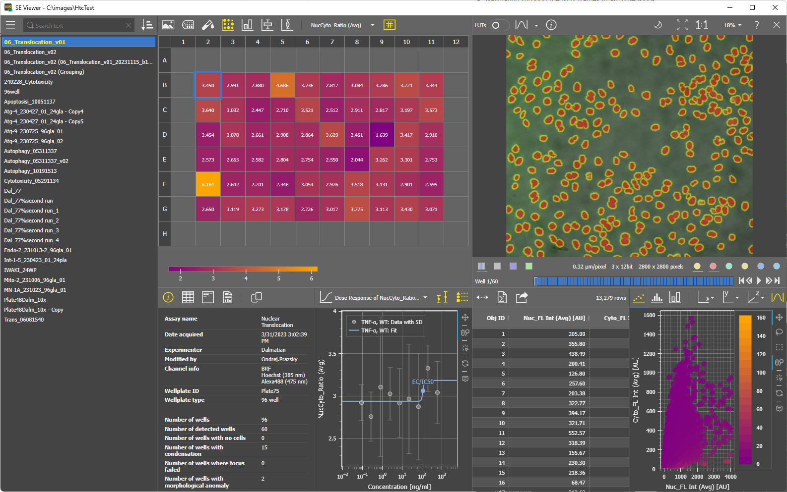
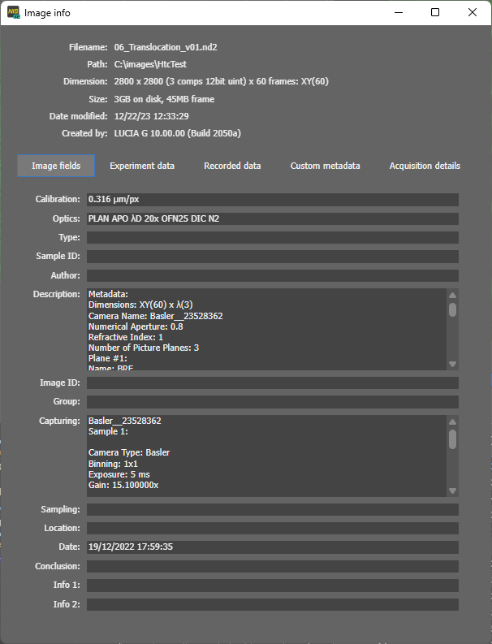
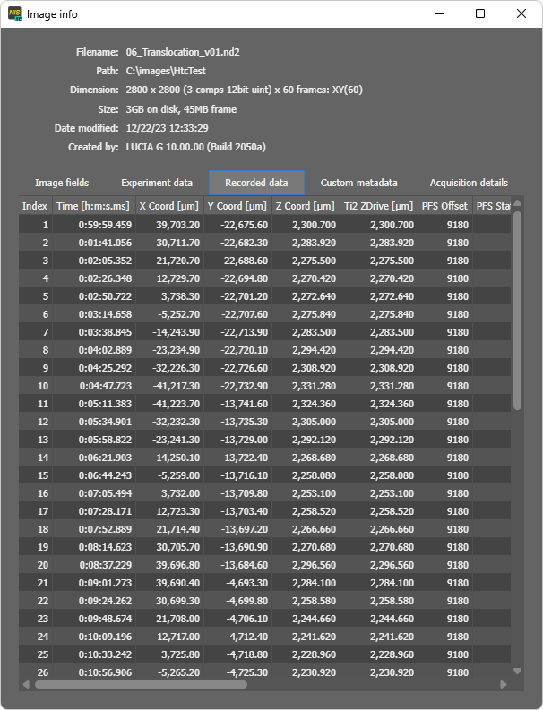
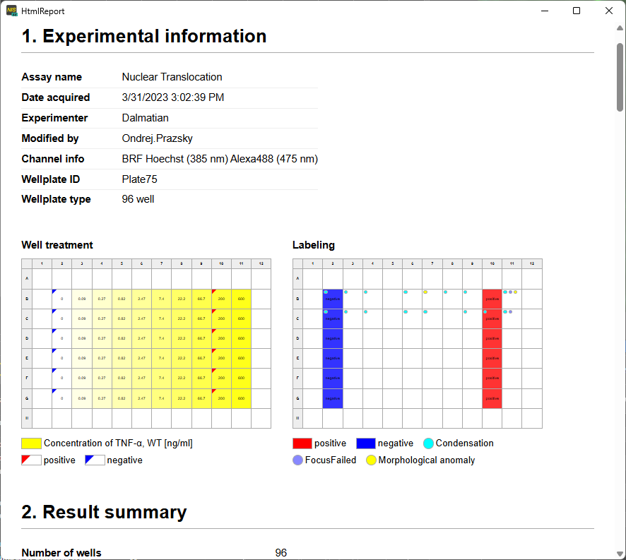

Smart Experiment Viewer
Smart Experiment Viewer
Version 1.0.0 (January 2025)
The SE Viewer is a viewer providing read access to experiments acquired with NIS Elements software.
Viewer capabilities
- Browse SE folders with experiments - search, sort, group files.
- Visualize ND2 files in 2D image view or 3D volume view.
- Viewing of individual channel or all channels.
- Viewing one or more binary layers.
- Using Look-up-tables (LUTs) (per-channel gain) and auto LUTs to enhance image contrast for viewing.
- Inspecting image information.
- Navigating through the ND2 frames in all dimensions.
- Visualizing results of analysis.
- Downloading results as CSV, Excel or PDF report.
Screenshots



